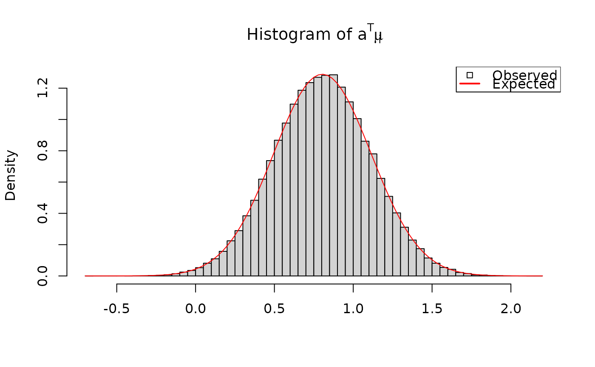
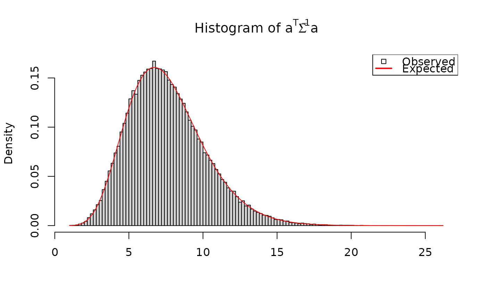
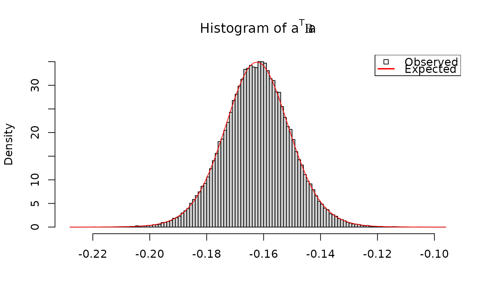

Gibbs sampler for posterior distribution of parameters and hyperparameters of a multivariate normal random-effects linear regression model called RxNormLM (see Details).
RxNormLM(
nsamples,
Y,
V,
X,
prior = NULL,
init,
burn,
updateHyp = TRUE,
storeHyp = TRUE,
updateRX = TRUE,
storeRX = FALSE
)number of posterior samples to draw.
N x q matrix of responses.
Either a q x q variance matrix or an q x q x N array of such matrices.
N x p matrix of covariates.
parameters of the prior MNIW distribution on the hyperparameters (see Details).
(optional) list with elements Beta, Sigma, and Mu providing the initial values for these. Default values are Beta = matrix(0, p, q), Sigma = diag(q), and Mu = Y.
integer number of burn-in samples, or fraction of nsamples to prepend as burn-in.
logical. Whether or not to update/store the hyperparameter draws.
logical. Whether or not to update/store the random-effects draws.
A list with (potential) elements:
BetaAn p x q x nsamples array of regression coefficient iterations (if storeHyp == TRUE)
SigmaAn q x q x nsamples array of regression variance matrices (if storeHyp == TRUE)
MuAn n x q x nsamples array of random effects (if storeRX == TRUE)
The RxNormLM model is given by $$ y_i \mid \mu_i \sim_iid N(\mu_i, V_i) $$ $$ \mu_i \mid \beta, \Sigma ~sim_ind N(x_i' \beta, \Sigma) $$ $$ \beta, \Sigma ~ MNIW(\Lambda, \Omega^{-1}, \Psi, \nu), $$ where \(y_i\) and \(\mu_i\) are response and random-effects vectors of length \(q\), \(x_i\) are covariate vectors of length \(p\), and \((\beta, \Sigma)\) are hyperparameter matrices of size \(p \times q\) and \(q \times q\).
The MNIW prior distribution is given by a list with elements Lambda, Omega, Psi, and nu. If any of these is NULL or missing, the default value is 0. Note that Omega == 0 gives a Lebesgue prior to \(\beta\).
# problem dimensions
n <- sample(10:20,1) # number of observations
p <- sample(1:4,1) # number of covariates
q <- sample(1:4,1) # number of responses
# hyperparameters
Lambda <- rMNorm(1, Lambda = matrix(0, p, q))
Omega <- crossprod(rMNorm(1, Lambda = matrix(0, p, p)))
Psi <- crossprod(rMNorm(1, Lambda = matrix(0, q, q)))
nu <- rexp(1) + (q+1)
prior <- list(Lambda = Lambda, Omega = Omega, Psi = Psi, nu = nu)
# random-effects parameters
BSig <- rmniw(1, Lambda = Lambda, Omega = Omega, Psi = Psi, nu = nu)
Beta <- BSig$X
Sigma <- BSig$V
# design matrix
X <- rMNorm(1, matrix(0, n, p))
# random-effects themselves
Mu <- rmNorm(n, X %*% Beta, Sigma)
# generate response data
V <- rwish(n, Psi = diag(q), nu = q+1) # error variances
Y <- rmNorm(n, mu = Mu, Sigma = V) # responses
# visual checks for each component of Gibbs sampler
# sample from p(Mu | Beta, Sigma, Y)
nsamples <- 1e5
out <- RxNormLM(nsamples,
Y = Y, V = V, X = X,
prior = prior,
init = list(Beta = Beta, Sigma = Sigma, Mu = Mu),
burn = floor(nsamples/10),
updateHyp = FALSE,
storeHyp = FALSE,
updateRX = TRUE,
storeRX = TRUE)
# conditional distribution is RxNorm:
iObs <- sample(n, 1) # pick an observation at random
# calculate the RxNorm parameters
G <- Sigma %*% solve(V[,,iObs] + Sigma)
xB <- c(X[iObs,,drop=FALSE] %*% Beta)
muRx <- G %*% (Y[iObs,] - xB) + xB
SigmaRx <- G %*% V[,,iObs]
# a' * mu_i is univariate normal with known mean and variance:
a <- rnorm(q) # arbitrary vector
amui <- crossprod(a, out$Mu[iObs,,]) # a' * mu_i
hist(amui, breaks = 100, freq = FALSE,
xlab = "", main = expression("Histogram of "*a^T*mu[i]))
curve(dnorm(x, mean = sum(a * muRx),
sd = sqrt(crossprod(a, SigmaRx %*% a)[1])),
add = TRUE, col = "red")
legend("topright",
legend = c("Observed", "Expected"),
lwd = c(NA, 2), pch = c(22, NA), seg.len = 1.5,
col = c("black", "red"), bg = c("white", NA))

# sample from p(Beta, Sigma | Mu, Y)
nsamples <- 1e5
out <- RxNormLM(nsamples,
Y = Y, V = V, X = X,
prior = prior,
init = list(Beta = Beta, Sigma = Sigma, Mu = Mu),
burn = floor(nsamples/10),
updateHyp = TRUE,
storeHyp = TRUE,
updateRX = FALSE,
storeRX = FALSE)
# conditional distribution is MNIW:
# calculate the MNIW parameters
OmegaHat <- crossprod(X) + Omega
LambdaHat <- solve(OmegaHat, crossprod(X, Mu) + Omega %*% Lambda)
PsiHat <- Psi + crossprod(Mu) + crossprod(Lambda, Omega %*% Lambda)
PsiHat <- PsiHat - crossprod(LambdaHat, OmegaHat %*% LambdaHat)
nuHat <- nu + n
# a' Sigma^{-1} a is chi^2 with known parameters:
a <- rnorm(q)
aSiga <- drop(crossprodV(a, V = out$Sigma, inverse = TRUE))
sigX <- crossprod(a, solve(PsiHat, a))[1]
hist(aSiga, breaks = 100, freq = FALSE,
xlab = "", main = expression("Histogram of "*a^T*Sigma^{-1}*a))
curve(dchisq(x/sigX, df = nuHat)/sigX, add = TRUE, col = "red")
legend("topright",
legend = c("Observed", "Expected"),
lwd = c(NA, 2), pch = c(22, NA), seg.len = 1.5,
col = c("black", "red"), bg = c("white", NA))

# a' Beta b is student-t with known parameters:
a <- rnorm(p)
b <- rnorm(q)
# vectorized calculations
aBetab <- crossprodV(X = aperm(out$Beta, c(2,1,3)),
Y = b, V = diag(q)) # Beta b
aBetab <- drop(crossprodV(X = a, Y = aBetab, V = diag(p))) # a' Beta b
# student-t parameters
muT <- crossprod(a, LambdaHat %*% b)[1]
nuT <- nuHat-q+1
sigmaT <- crossprodV(a, V = OmegaHat, inverse = TRUE)[1]
sigmaT <- sigmaT * crossprodV(b, V = PsiHat)[1]
sigmaT <- sqrt(sigmaT / nuT)
hist(aBetab, breaks = 100, freq = FALSE,
xlab = "", main = expression("Histogram of "*a^T*Beta*a))
curve(dt((x-muT)/sigmaT, df = nuT)/sigmaT, add = TRUE, col = "red")
legend("topright",
legend = c("Observed", "Expected"),
lwd = c(NA, 2), pch = c(22, NA), seg.len = 1.5,
col = c("black", "red"), bg = c("white", NA))
